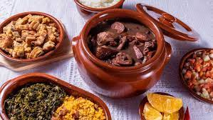

Jantar com a minha vó Nativi
Feijoada Típica

Ingredientes
- 1 kg de feijão preto
- Água o quanto baste
- 2 línguas defumadas ou salgadas
- 1 kg de carne seca
- 1/2 kg de costelinha de porco salgada
- 1/2 kg de lombo de porco salgado
- 1/2 kg de linguiça calabresa defumada
- 2 paios
- 1/4 kg de toucinho defumado
- 2 pés de porco salgados
- 3 cebolas cortadas em cubos
- 3 dentes de alho picados
- 4 folhas de louro
- Pimenta malagueta amassada (opcional)
- 1/2 xícara de óleo ou banha de porco
Modo de Preparo
- Escolha o feijão e deixe de molho por 12 horas.
- Lave bem as carnes salgadas, corte em pedaços e deixe de molho em água por 12 horas,
trocando a água pelo menos duas vezes.
- Coloque o feijão para cozinhar em bastante água com as folhas de louro.
- Em uma panela à parte, cozinhe por ½ hora as carnes salgadas, escorra a água e reserve.
- Quando o feijão estiver começando a amolecer, coloque as carnes, a linguiça
e o paio e deixe ferver em fogo brando até estar tudo bem cozido (leva algum tempo: de 2 a 3 horas).
- Esquente o óleo ou banha de porco e refogue os temperos.
- Coloque uma concha do feijão, amasse bem e deixe ferver despeje na feijoada e deixe
ferver por mais 30 minutos.
- Sirva bem quente acompanhado de couve picada fina e refogada, farinha de mandioca crua,
gomos de laranja e uma cerveja bem gelada.
Bolo de Prestígio
Ingredientes
- 3 ovos
- 1/2 xícara (chá) de óleo
- 1 xícara (chá) de leite
- 1 xícara (chá) de açúcar
- 1 xícara (chá) de chocolate em pó
- 2 xícaras (chá) de farinha de trigo
- 1 colher (sopa) de fermento
Cobertura
- 3 colheres (sopa) de margarina
- 8 colheres (sopa) de açúcar
- 2 colheres (sopa) de chocolate em pó
- 2 xícaras (chá) de leite
Recheio
- 1 lata de leite condensado
- 1 colher (sopa) de margarina
- 100 g de coco ralado
Modo de Preparo
-
Antes de começar o preparo da receita, coloque no refrigerador
a caixa de chantilly para que ele fique no ponto certo.
-
Triture as bolachas de maisena no processador ou liquidificador até
formar uma farofa, coloque em uma vasilha e acrescente a margarina, misture com as
pontas do dedos, até ficar uma farofa e reserve.
-
Forre as laterais de uma forma de aro removível com as bolachas calipso, em
seguida acrescente a farofa feita com as bolachas de maisena, pressione um
pouco com as mãos, para que ela fique bem acomodada no recipiente, reserve.
-
Em uma panela coloque o leite condensado,as gemas e o leite e leve ao fogo,
mexendo sempre, até adquirir consistência cremosa.
- Deixe esfriar.
-
Enquanto esfria, hidrate as 3 colheres de gelatina incolor na água, em banho-maria.
-
Quando ela já estiver pronta, acrescente ao creme e misture bem.
-
Após o creme estar frio, bata na batedeira o chantilly e depois misture
vagarosamente ao creme, até que se torne uma mistura homogênea.
-
Coloque sobre a farofa de bolacha que está preparada na forma e leve à geladeira.
-
Enquanto a torta vai aquirir consistência, prepare a cobertura em banho-maria,
derreta o chocolate.
-
Acrescente o creme de leite, misture bem e espalhe sobre a torta.
-
Deixe na geladeira por algumas horas e depois desenforme.